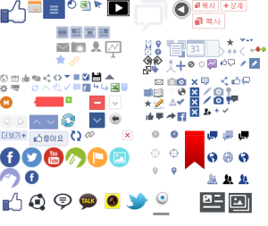

CSS 레퍼런스 북
background-image
배경 이미지를 설정하며, 주로 이미지 경로를 지정하는 방식으로 사용합니다. 경로는 background-image: url("이미지 경로") 처럼 작성합니다. 특별한 점은 컨테이너의 크기와 상관없이 삽입된 background-image의 크기는 컨테이너에 맞춰 늘어나거나 줄어들지 않고 그대로 표시되며, 이미지 보다 컨테이너가 더 크다면 이미지는 반복되어 표시되게 됩니다.
HTML 태그 사용법
- src속성은 필수이며, 포함하고자 하는 이미지의 경로를 지정한다.
- alt속성은 이미지의 텍스트 설명이며 필수는 아니다.
- 네트워크 오류, 콘텐츠 차단, 죽은 링크 등 이미지를 표시할 수 없을 경우에 이 속성(alt)의 값을 대신 보여준다.
- 다만, 스크린 리더가 alt의 값을 읽어 사용자에게 이미지를 설명하므로, 접근성 차원에서 매우 유용하다. ex)시각장애를 가진 분들
<img> 태그를 사용하는 경우
- 프린트가 필요한 경우 - 백그라운드 이미지는 출력 시 포함되지 않는다.
- 이미지에 텍스트 설명이 필요한 경우 - 위에서 언급했 듯이 접근성에 유리하다
- 이미지가 콘텐츠의 중심으로 가장 중요한 경우
CSS 태그 사용법
background-img 속성은 요소의 배경 이미지를 한 개나 여러 개 지정한다. 먼저 불러와진 이미지부터, 아래로 쌓이게 된다.
CSS를 사용하는 경우
- 일정 부분만 선택해 보여줄 경우
- 속성을 설명할 때 특징으로 예시를 들었다.
- 이미지 위에 텍스트가 들어가는 경우
- 이미지 위에 텍스트가 들어가는 경우 백그라운드 이미지를 넣고 그 태그 내부에 간단히 텍스트를 넣어 사용할 수 있다.(꼭 이 방법만이 아니어도
positiong속성을 이용해 하는 등 다양한 방법이 있기는 하다.)
- 페이지 전체 출력 시 이미지를 제거해야 하는 경우
- <img&ht;태그와 반대로 출력 시 나오지 않는다.
- 이미지에 확대, 축소가 필요한 경우
- background-size 등의 속성을 사용해 배경을 다양한 방법으로 조작 가능하다.
- 반복되는 이미지일 경우
- background-repeat : no-repeat를 선언하지 않으면 같은이미지가 정해진 범위안에서 계속 반복되어 나타난다.
이미지 스프라이트
이미지 스프라이트(image sprite)란 여러 개의 이미지를 하나의 이미지로 합쳐서 관리하는 이미지를 의미합니다. 웹 페이지에 이미지가 사용될 경우 해당 이미지를 다운받기 위해 웹 브라우저는 서버에 이미지를 요청하게 됩니다. 하지만 사용된 이미지가 많을 경우 웹 브라우저는 서버에 해당 이미지의 수만큼 요청해야만 하므로 웹 페이지의 로딩 시간이 오래 걸리게 됩니다.
이미지 스프라이트(image sprite)를 사용하면 이미지를 다운받기 위한 서버 요청을 단 몇 번으로 줄일 수 있습니다. 모바일 환경과 같이 한정된 자원을 사용하는 플랫폼(platform)에서는 웹 페이지의 로딩 시간을 단축해주는 효과가 있습니다. 또한, 많은 이미지 파일을 관리하는 대신 몇 개의 스프라이트 이미지(sprite image) 파일만을 관리하면 되므로 매우 간편합니다.
예제
background-images에 반응형 이미지를 사용하는 방법
background-image: url(small.jpg);
}
@media
(min-width: 468px),
(-webkit-min-device-pixel-ratio: 2),
(min-resolution: 192dpi) {
.img {
background-image: url(large.jpg);
}
}
이 CSS 문법을 사용하면 브라우저 조건에 따라 두 이미지 중 하나만 다운로드한다. 따라서 HTML의 반응형 이미지 문법과 동일한
성능 목표를 달성할 수 있다. 이것이 도움이 된다면 앞의 <picture> 문법과 동등한 CSS 버전으로 생각하면 된다. 브라우저는 이 규칙을 따르고 일치하는 것을 표시해야 한다.
srcset/sizes처럼 브라우저가 최상의 옵션을 선택하도록 놔두고 싶을 수 있다. CSS에서의 이 솔루션은 궁극적으로 image-set() 함수가 될 것이다. 오늘날 image-set() 함수에는 두 가지 문제가 있다.
문제점
- 아직 정식으로 지원되지 않는다. 사파리에서는 많이 구현되었지만 image-set()는 8년 동안 크롬Chrome에서 접두사로 사용되었으며 파이어폭스Firefox는 전혀 지원하지 않는다.
- 사양 자체도 시대에 뒤떨어져 있다. 예를 들어, x 설명자만 지원한다(아직 w 설명자는 지원하지 않는다.)